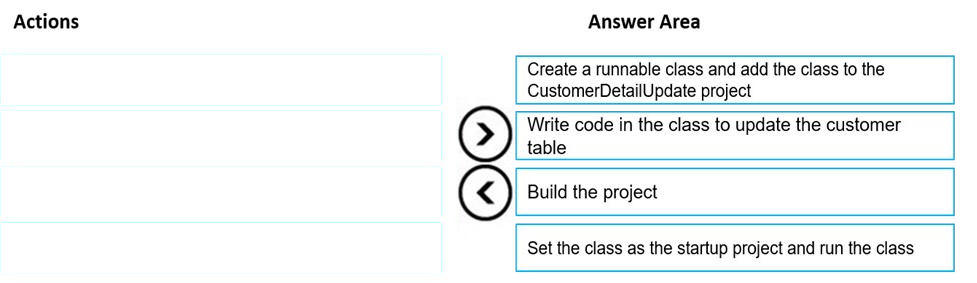
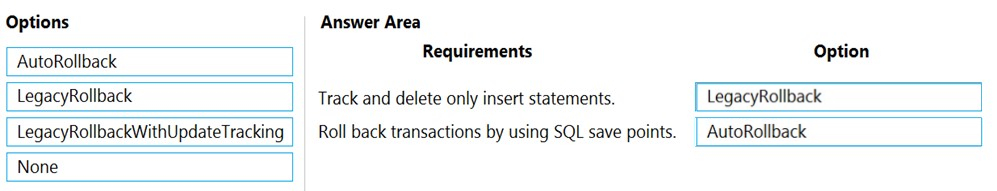
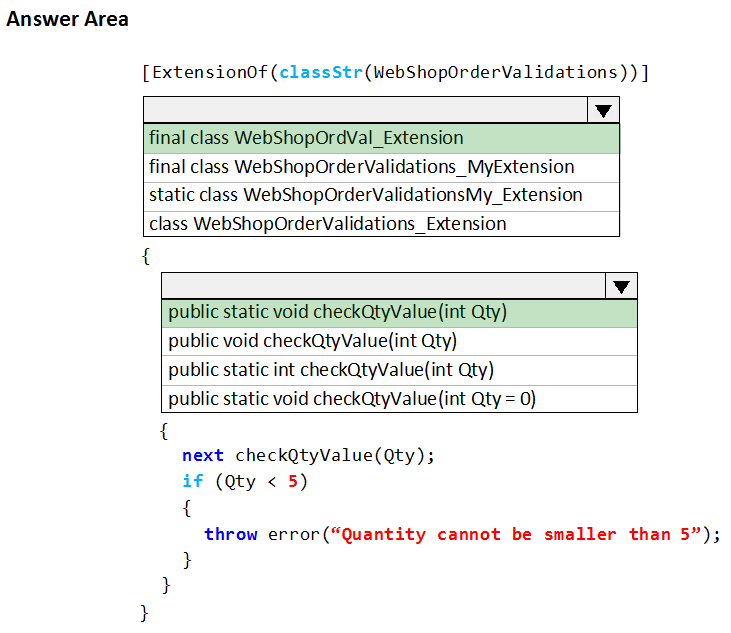
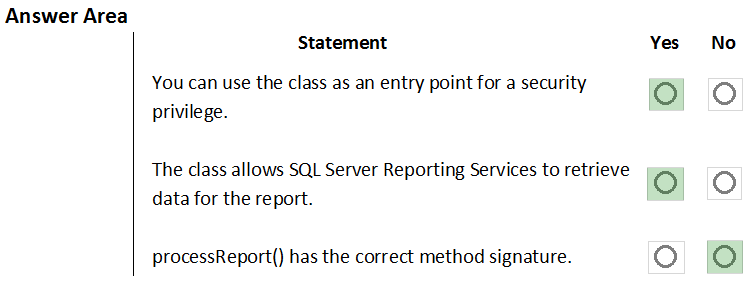
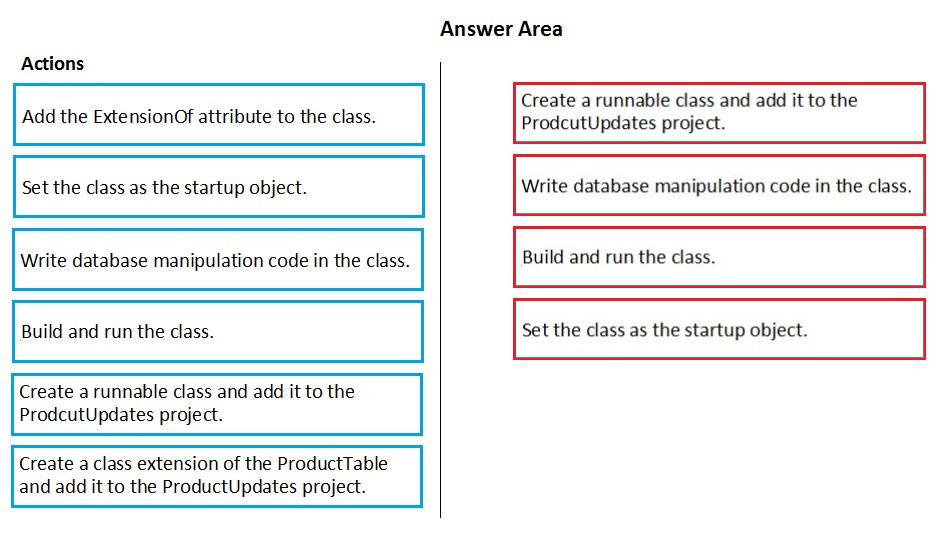
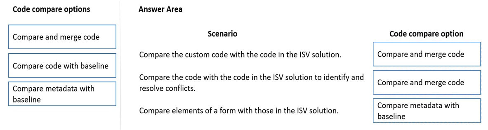
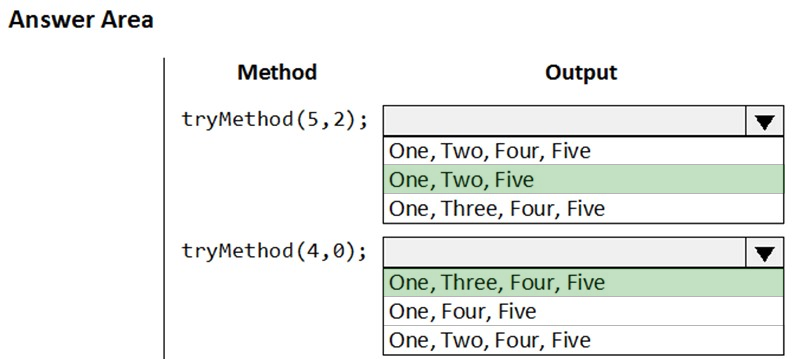

This question focuses on displaying the value of an integer variable named "totalSales" in an "info" statement in Dynamics 365 Finance. The "info" statement is commonly used to display messages to the user. To display an integer in an "info" statement, you need to convert it to a string representation.
Let's analyze each option:
"info(int2str(totalSales));": This is correct. The "int2str()" function converts an integer value to its string representation. The "info" statement can then display this string.
"info(totalSales);": This is incorrect. The "info" statement expects a string as input. Directly passing an integer variable will result in a compilation error.
"info(any2str(totalSales));": This is correct. The "any2str()" function can convert a value of any data type to a string. Since an integer can be implicitly converted to "anytype", this function will successfully convert "totalSales" to a string, which can then be displayed by the "info" statement.
"info(strfmt("%1", totalSales));": This is correct. The "strfmt()" function is a versatile way to format strings. The "%1" acts as a placeholder that will be replaced by the value of "totalSales". The "strfmt" function automatically handles the conversion of the integer to a string.
"info(strLine(totalSales, 1));": This is incorrect. The "strLine()" function is used to extract a specific line from a string that contains multiple lines separated by newline characters. It's not relevant for converting an integer to a string for display in an "info" statement.
Based on this analysis, the three code segments that can be used to display the value of "totalSales" in an "info" statement are "int2str(totalSales)", "any2str(totalSales)", and "strfmt("%1", totalSales)".
Therefore, the correct answers are "info(int2str(totalSales));", "info(any2str(totalSales));", and "info(strfmt("%1", totalSales));".
Question 87
This drag-and-drop question focuses on the steps involved in creating and running a runnable class (a class with a "main" method) in Dynamics 365 Finance using Visual Studio to update data in the "CustTable" table.
Let's analyze the provided actions and determine their logical order:
Create a class: This is the foundational step. You need to create a new class that will contain your code for updating the "CustTable" data.
Add a main method: This step is essential for making the class runnable. The "main" method serves as the entry point for execution when you run the class from Visual Studio.
Add a method to update the CustTable table: This step contains the actual logic for updating the data in the "CustTable". You'll use X++ code and likely the "update" keyword or a "doUpdate()" call within this method to modify the data. This method will then be called within your "main" method.
Set the class as the startup object: This step is necessary to tell Visual Studio which class to execute when you start debugging or running the project. By setting your class as the startup object, you ensure that its "main" method will be executed.
Build the solution: This step compiles the code and creates the necessary assemblies. It's essential to build the solution after making changes to the code to ensure that the changes are reflected in the compiled output.
Based on this analysis, the logical sequence of actions is:
Create a class.
Add a method to update the CustTable table.
Add a main method.
Set the class as the startup object.
Build the solution.
Therefore, the correct order is: Create a class, Add a method to update the CustTable table, Add a main method, Set the class as the startup object, Build the solution.

Question 88
This question focuses on using attributes in Dynamics 365 Finance to control the behavior of the compiler, specifically to cause compilation to fail if a specific method is called within a class. This is a useful technique for deprecating methods or preventing their use in certain contexts.
Let's analyze each option:
SysAppSecurityAttribute: This attribute is used for security-related purposes, such as controlling access to specific entry points or methods. It doesn't affect compilation based on method calls.
SysTestCategory: This is not a standard Dynamics 365 Finance attribute. The correct attribute for categorizing test methods is "SysTestCategoryAttribute". However, even this attribute does not influence compilation based on method calls.
SysObsoleteAttribute: This attribute is specifically designed for marking elements (like classes or methods) as obsolete. When applied to a method, it can be configured to cause a compilation error if that method is called, along with a custom message explaining why the method should not be used. This is the correct option.
SysAttribute: This is a base class for attributes, not a specific attribute itself. It doesn't have any direct effect on compilation.
Based on this analysis, the correct attribute to use for causing compilation to fail when a specific method is called within a class is "SysObsoleteAttribute".
Therefore, the correct answer is SysObsoleteAttribute.
Question 89
This drag-and-drop question focuses on selecting the appropriate "TestTransactionMode" option in the SysTest framework of Dynamics 365 Finance based on different testing requirements. The "TestTransactionMode" attribute controls how database transactions are handled during test execution, affecting data persistence and test isolation.
Let's analyze each requirement and determine the appropriate "TestTransactionMode":
All insert statements are tracked and deleted during clean-up:
"LegacyRollback": This mode tracks all inserted records and deletes them during the test cleanup phase. This ensures that inserted data does not persist after the test. This matches the requirement.
"LegacyRollbackWithUpdateTracking": This is not the best choice, since we only care about inserted data.
"AutoRollback": This is not the best choice, since we only care about inserted data.
"None": This is not correct, since it does not provide any cleanup mechanism.
All transactions are rolled back using SQL save points, and all database statements are routed to the main connection, including user connections:
"LegacyRollback": This does not use SQL save points.
"LegacyRollbackWithUpdateTracking": This does not use SQL save points.
"AutoRollback": This mode uses SQL save points to roll back all transactions, ensuring that no data changes persist after the test. It also routes all database statements to the main connection. This matches the requirement.
"None": This is not correct, since it does not provide any rollback mechanism.
Based on this analysis:
The first requirement is met by "LegacyRollback".
The second requirement is met by "AutoRollback".
Therefore, you should drag "LegacyRollback" to the first requirement and "AutoRollback" to the second requirement.

Question 90
This "Hotspot" question involves creating an extension class in Dynamics 365 Finance to wrap a method using Chain of Command (CoC) and add validation logic. The scenario provides a base class named "WebShopOrderVal" with a method named "checkQtyValue". The goal is to create an extension class, wrap the "checkQtyValue" method, and throw an exception if the "Qty" parameter is less than 5.
Let's analyze the options for each part of the question:
Part 1: Creating the extension class
"final class WebShopOrderVal_Extension": This option is mostly correct. Extension classes must be declared as "final", and the recommended naming convention is to use the original class name followed by the suffix "_Extension". This option correctly follows both of those rules.
"final class WebShopOrderVal_MyExtension": This option is partially correct. The "final" keyword is correct, but the suffix "_MyExtension" deviates from the standard naming convention. While technically it might compile and run, it's not considered best practice.
"static class WebShopOrderVal_Extension": This option is incorrect. Extension classes cannot be "static"; they must be "final".
"static class WebShopOrderVal_MyExtension": This option is incorrect for the same reasons as the previous one. Extension classes cannot be "static".
Based on the requirement to create an extension class and wrap the method, the best option from the choices provided is "final class WebShopOrderVal_Extension", as it correctly uses the "final" keyword and the recommended naming convention.
Part 2: Wrapping the method and adding validation logic
"public static void checkQtyValue(int Qty)":
This declaration is almost correct.
"public" is correct, as it needs to match the visibility of the original method.
"static" is correct because the method we are wrapping is static. The method in the extension class must have the same signature (except for the default value of parameters) as the method it wraps in the base class.
"checkQtyValue" is correct because we are wrapping a method with the same name in the base class.
"(int Qty)" is correct, we are using the same parameter type.
"public void checkQtyValue(int Qty = 0)": This option is incorrect because it attempts to add a default value to the "Qty" parameter. When wrapping a method using CoC, you cannot change the method signature, including adding or modifying default parameter values.
"public static int checkQtyValue(int Qty)": This option is incorrect because the return type does not match the original method's return type. The method being wrapped, "checkQtyValue", is "void" so the wrapper must also be "void".
"public int checkQtyValue(int Qty)": This option is incorrect because it's missing the "static" keyword (the original method is static) and it has the incorrect return type.
The option "public static void checkQtyValue(int Qty)" is the only option that has the correct signature to wrap the original static method.
Adding the Validation Logic
To complete the solution, you would add the validation logic within the "checkQtyValue" method in the extension class:
"java
[ExtensionOf(classStr(WebShopOrderVal))]
final class WebShopOrderVal_Extension
{
public static void checkQtyValue(int Qty)
{
if (Qty < 5)
{
throw error("Quantity must be at least 5.");
}
next checkQtyValue(Qty);
}
}
"
This code first checks if "Qty" is less than 5. If it is, it throws an exception. Then, it calls "next checkQtyValue(Qty)" to execute the original method (and any other potential wrappers in the chain).
Therefore, the correct answers are: "final class WebShopOrderVal_Extension" and "public static void checkQtyValue(int Qty)". The validation logic would then be added within the method as shown above.

Question 91
This "Hotspot" question presents a code snippet in Dynamics 365 Finance and asks you to evaluate the truthfulness of statements related to security attributes, data contracts, and report processing methods.
Here's a breakdown of the code and the concepts involved:
Code:
"java
class CashDiscountDP extends SRSReportDataProviderBase
{
CashDisc cashDisc;
[
SRSParameter(dataContractStr(CashDiscountContract))
]
public CashDisc getCashDisc(IdentifierName _cashDiscName)
{
cashDisc = CashDisc::find(_cashDiscName);
return cashDisc;
}
[
SysEntryPointAttribute(true)
]
public CashDiscountList getCashDiscountList()
{
CashDiscountList cashDiscountList;
// Populate the cashDiscountList
return cashDiscountList;
}
public void processReport()
{
// Business logic to process the report
}
}
"
Concepts:
"SRSReportDataProviderBase": This is the base class for Report Data Provider (RDP) classes, which are used to provide data to reports.
"SRSParameterAttribute": This attribute is used to link a method in an RDP class to a data contract parameter.
"SysEntryPointAttribute": This attribute is used to secure server-side methods, particularly those used as entry points for services or batch jobs. It controls whether the called method performs on the server or on the client. It also specifies whether permissions are checked for the caller. In this case, "true" indicates that permissions are checked, and the call is likely to execute on the server.
"processReport()": This is the main method in an RDP class that is executed to generate the report data.
Analysis:
Let's analyze each statement:
The "SysEntryPointAttribute" attribute grants permissions to call the "getCashDiscountList" method: This statement is incorrect. The "SysEntryPointAttribute" attribute is used to control how permissions are checked when the method is called. It doesn't grant permissions, but rather enforces them. In this context, "SysEntryPointAttribute(true)" means that the caller's permissions will be checked before the method is executed. In Dynamics 365 for Finance and Operations, "SysEntryPointAttribute" is not used for directly granting permissions to call the "getCashDiscountList" method. Instead, permissions are typically managed through security roles, duties, and privileges. If a menu item is created to call the "getCashDiscountList" method, the permissions would be controlled by associating the menu item with privileges and assigning those privileges to security roles. The "SysEntryPointAttribute" on the method would only control the behavior of the method in terms of how permissions are validated during execution. It is not involved in assigning or granting permissions to call the method. The correct answer is No.
The "SRSParameterAttribute" attribute can use the "CashDiscountContract" class: This statement is correct. The "SRSParameterAttribute" attribute is used to link a method in an RDP class to a data contract parameter. The "dataContractStr(CashDiscountContract)" part correctly references the "CashDiscountContract" data contract.
The return type for the "processReport" method is valid: This statement is correct. The "processReport" method in an RDP class is responsible for generating the report data. It typically does not return a value, so a "void" return type is appropriate.
Based on this analysis, the correct answers are:
Statement 1: No
Statement 2: Yes
Statement 3: Yes

Question 92
This drag-and-drop question focuses on the steps involved in creating and running a runnable class (a class with a "main" method) in Dynamics 365 Finance using Visual Studio to update data in the "ProductTable" table.
Let's analyze the provided actions and determine their logical order:
Create a runnable class and add it to the ProductUpdates project: This is the foundational step. You need to create a new class that will contain your code for updating the "ProductTable" data. This class must have a "main" method to make it runnable.
Set the class as the startup object: This step is necessary to tell Visual Studio which class to execute when you start debugging or running the project. By setting your class as the startup object, you ensure that its "main" method will be executed.
Write database manipulation code in the class: This step contains the actual logic for updating the data in the "ProductTable". You'll use X++ code and likely the "update" keyword or a "doUpdate()" call within this method to modify the data. This step is typically done after creating the class and adding the "main" method, but it could also be done before setting the class as the startup object. There is no dependency between those two steps.
Build and run the class: This step compiles the code and executes the "main" method of your startup object. It's essential to build the solution after making changes to the code to ensure that the changes are reflected in the compiled output.
Based on this analysis, the logical sequence of actions is:
Create a runnable class and add it to the ProductUpdates project.
Write database manipulation code in the class.
Set the class as the startup object.
Build and run the class.
It is important to note that steps 2 and 3 can technically be interchanged. However, the order presented above is a common and logical workflow.
Therefore, the correct order is: Create a runnable class and add it to the ProductUpdates project, Write database manipulation code in the class, Set the class as the startup object, Build and run the class.

Question 93
This drag-and-drop question focuses on code comparison options in Dynamics 365 Finance, particularly in the context of overlayering an Independent Software Vendor (ISV) solution. Understanding the different comparison options is essential for managing customizations and ensuring compatibility when working with extensions and overlayering.
Let's analyze each scenario and determine the appropriate code comparison option:
Compare the code changes introduced by a customization with the code of the base application:
Compare code with baseline: This option is suitable when you want to compare your customized code against a specific baseline version of the application. This is helpful for identifying the specific changes introduced by your customization. However, it does not tell you what has changed between two different versions of the base application.
Compare code with a different model: This option allows you to compare code between two different models. However, it is more helpful when comparing two models that both contain customizations. It does not tell you what has changed between two different versions of the base application.
Compare metadata with baseline: This option compares metadata, not code. It is not directly applicable to comparing code changes.
Since the requirement states that we are overlaying code, we are changing the base application. We need to identify what we have changed. Therefore, we should Compare code with baseline.
Compare the code changes introduced by a customization against the original code of the base application:
This scenario is identical to the first scenario. Therefore, we should Compare code with baseline.
Compare the changes in forms between two different versions of the base application:
Compare code with baseline: This option is for comparing code, not specifically forms or their metadata.
Compare code with a different model: This option is for comparing code between models, not for comparing changes in forms between versions.
Compare metadata with baseline: This option is the most suitable for comparing changes in forms between different versions of the base application. Forms and their structure are primarily defined by metadata. Comparing the metadata against a baseline allows you to identify changes in form elements, data sources, controls, etc.
Therefore, we should Compare metadata with baseline.
Based on this analysis:
The first scenario should be matched with Compare code with baseline.
The second scenario should be matched with Compare code with baseline.
The third scenario should be matched with Compare metadata with baseline.
Therefore, the correct answers are: Compare code with baseline, Compare code with baseline, and Compare metadata with baseline.

Question 94
This "Hotspot" question presents a code snippet in Dynamics 365 Finance and asks you to determine the output of various calls to a method named "tryMethod". The method contains a "try-catch-finally" block and uses the "info()" method to output messages. The key to answering this question correctly lies in understanding how exceptions and the "finally" clause work in X++.
Here's a breakdown of the code and the relevant concepts:
"try-catch-finally": This is a standard exception handling mechanism. The "try" block contains code that might throw an exception. The "catch" block contains code that is executed if an exception occurs within the "try" block. The "finally" block contains code that is always executed after the "try" and "catch" blocks, regardless of whether an exception was thrown or not.
"info()": This method displays a message in the Infolog.
"retry": The "retry" statement, which can only be used within a "catch" block, causes execution to jump back to the beginning of the "try" block. It's typically used when the cause of the exception can be corrected within the "catch" block, allowing the code in the "try" block to be attempted again. Importantly, "retry" clears the Infolog of any messages generated since entering the "try" block.
"div": This is the integer division operator. If "_value2" is 0, a "DivideByZeroException" will be thrown.
Analysis:
Let's trace the execution for each call:
"tryMethod(5, 2)":
"One" is added to the Infolog.
The "if" condition is false (neither "_value1" nor "_value2" is 2), so "Three" is added to the Infolog.
"_value1 div _value2" (5 div 2) executes without error.
The "catch" block is skipped.
The "finally" block is executed, and "Five" is added to the Infolog.
Output: One, Three, Five
"tryMethod(4, 0)":
"One" is added to the Infolog.
The "if" condition is false, so "Three" is added to the Infolog.
"_value1 div _value2" (4 div 0) throws a "DivideByZeroException".
The "catch" block is executed, and "Four" is added to the Infolog.
The "if" condition within the "catch" block is false ("_value1" is not 3).
The "finally" block is executed, and "Five" is added to the Infolog.
Output: One, Three, Four, Five
"tryMethod(2, 0)":
"One" is added to the Infolog.
The "if" condition is true ("_value1" is 2), so "Two" is added to the Infolog.
"_value1 div _value2" (2 div 0) throws a "DivideByZeroException".
The "catch" block is executed, and "Four" is added to the Infolog.
The "if" condition within the "catch" block is false ("_value1" is not 3).
The "finally" block is executed, and "Five" is added to the Infolog.
Output: One, Two, Four, Five
"tryMethod(3, 0)":
"One" is added to the Infolog.
The "if" condition is false, so "Three" is added to the Infolog.
"_value1 div _value2" (3 div 0) throws a "DivideByZeroException".
The "catch" block is executed, and "Four" is added to the Infolog.
The "if" condition within the "catch" block is true ("_value1" is 3).
"retry" is executed. The Infolog is cleared of messages from the current "try" block execution (messages "One", "Three", "Four" are removed).
Execution jumps back to the beginning of the "try" block.
"One" is added to the Infolog.
The "if" condition is false, so "Three" is added to the Infolog.
"_value1 div _value2" (3 div 0) throws a "DivideByZeroException" again.
The "catch" block is executed, and "Four" is added to the Infolog.
The "if" condition within the "catch" block is true ("_value1" is 3).
"retry" is executed again. The Infolog is cleared again (messages "One", "Three", "Four" are removed).
Execution jumps back to the beginning of the "try" block.
This would repeat indefinitely, causing an infinite loop if there were no mechanism to eventually break out of it. However, in a real-world scenario, there's usually a limit to the number of retries or a condition that eventually prevents the "retry". Since we are only concerned with what is outputted to the infoLog, and since the retry will clear the log, the loop will result in the same output each time. When the method exits, the "finally" block will execute, adding "Five" to the infoLog.
Output (assuming the loop eventually terminates): One, Three, Four, Five
Based on this analysis, the correct answers are:
tryMethod(5, 2): One, Three, Five
tryMethod(4, 0): One, Three, Four, Five
tryMethod(2, 0): One, Two, Four, Five
tryMethod(3, 0): One, Three, Four, Five

Question 95
This drag-and-drop question focuses on using the Asset Library in Dynamics 365 Finance, specifically uploading different types of assets for a solution. Understanding the different asset types and their purposes is crucial for managing and deploying solutions effectively.
Let's analyze each activity and determine the appropriate asset type:
Upload a deployable package created from a Visual Studio solution:
Software Deployable Package: This is the correct asset type. Deployable packages are the standard mechanism for packaging and deploying customizations and code changes in Dynamics 365 Finance. They are typically created in Visual Studio and then uploaded to the Asset Library for deployment to different environments.
Upload a database backup for the application:
Database Backup (.bacpac): This is the correct asset type. Database backups, in the ".bacpac" format, are used to store backups of the Dynamics 365 database. These backups can be used for restoring the database to a previous state or for moving the database between environments.
Upload an upgrade package from a previous version of Dynamics 365 Finance:
AX 2012 Model: This is not the correct choice.
Retail Assets: This is not the correct choice.
Software Deployable Package: This is the correct asset type. An upgrade package is a special kind of deployable package.
Based on this analysis:
The first activity (deployable package) should be matched with Software Deployable Package.
The second activity (database backup) should be matched with Database Backup (.bacpac).
The third activity (upgrade package) should be matched with Software Deployable Package.
Therefore, the correct answers are: Software Deployable Package, Database Backup (.bacpac), and Software Deployable Package.
Question 96
This question focuses on the correct way to make a form accessible from the menu in Dynamics 365 Finance. Understanding the different types of menu items is crucial for structuring the user interface and providing navigation within the application.
Let's analyze each option:
display menu item: This is the correct option. Display menu items are specifically designed to open forms. When you create a display menu item and link it to a form, users can access that form by navigating to the menu item in the user interface.
menu reference: A menu reference is used to refer to an existing menu from within another menu. It's a way to create shortcuts or aliases to menus, not to directly open forms.
output menu item: Output menu items are used to run reports or generate documents, not to open forms.
action menu item: Action menu items are used to execute a specific action, typically implemented in a class. They are not directly used for opening forms.
Based on this analysis, the correct way to make a form accessible from the menu is to create a display menu item and link it to the form.
Therefore, the correct answer is display menu item.
Question 97
This drag-and-drop question focuses on the components used in Dynamics 365 Finance development, specifically when extending existing functionality to create a new feature. The scenario involves extending the standard fixed asset functionality, and the task is to choose the appropriate components for this development.
Let's analyze each requirement and determine the appropriate component:
A deployable and compilation unit of one or more:
Package: This is the correct choice. A package is a deployable unit that contains one or more models. It's the mechanism used to package and deploy customizations and extensions in Dynamics 365 Finance. It is also the unit used for compilation.
Project: A project is a Visual Studio concept used for organizing development artifacts. It's not a deployable unit.
Model: A model is a design-time concept that contains a group of elements (like metadata and source code). While it is a compilation unit, it's not directly deployable. Models are contained within a package for deployment.
Helps organize and manage elements under development:
Package: Packages are used for deployment, not for organizing development artifacts during development.
Project: This is the correct choice. A Visual Studio project is used to organize and manage the elements (code, metadata, etc.) that you are working on during development. It provides a structured way to manage your development artifacts.
Model: While models are used for grouping related elements, projects provide a higher-level organization for development within Visual Studio.
Based on this analysis:
The first requirement (deployable and compilation unit) should be matched with Package.
The second requirement (organize and manage elements) should be matched with Project.
Therefore, the correct answers are Package and Project.
Question 98
This "Hotspot" question focuses on choosing the appropriate components in Dynamics 365 Finance for building analytical solutions. The scenarios involve presenting information in a workspace, allowing users to modify existing analytical content, and embedding reports.
Let's analyze each scenario and determine the appropriate component:
Present information at the top of a workspace:
Tile: This is the correct choice. Tiles are commonly used in workspaces to present key information or metrics at a glance. They often provide a summarized view of data and can be used as entry points to more detailed reports or analyses.
Dashboard: Dashboards are used to present a collection of visualizations and reports. While a workspace can contain a dashboard, individual pieces of information are typically displayed using tiles.
Self-service BI: Self-service BI refers to the ability for users to create and modify their own analytical content. It's not a specific component for displaying information.
Embedded BI: Embedded BI refers to embedding reports within forms or other parts of the application. While you might embed a report within a workspace, tiles are the more appropriate choice for presenting summarized information at the top.
Allow users to modify the existing analytical content:
Tile: Tiles are typically static and don't offer modification capabilities to end-users.
Dashboard: This is the correct choice. Power BI dashboards provide users with tools to interact with the data, change visualizations, apply filters, and even create their own visualizations if given the right permissions. It enables users to modify existing analytical content.
Self-service BI: While self-service BI is the concept that enables users to modify existing content, a Power BI dashboard is the specific interface where they do this.
Embedded BI: Embedded BI focuses on embedding reports; it doesn't necessarily imply user modification capabilities.
Embed reports within specific parts of the application, such as forms or other workspaces:
Tile: Tiles are used for displaying summarized information, not for embedding full reports.
Dashboard: Dashboards can be embedded, but they are usually a collection of reports.
Self-service BI: Self-service BI is a concept, not a component for embedding reports.
Embedded BI: This is the correct choice. Embedded BI in Dynamics 365 Finance refers to the capability of embedding Power BI reports directly within forms, workspaces, or other parts of the application, providing contextual insights to users.
Based on this analysis:
The first scenario should be answered with Tile.
The second scenario should be answered with Dashboard.
The third scenario should be answered with Embedded BI.
Therefore, the correct answers are Tile, Dashboard, and Embedded BI.
Question 99
This question focuses on the preparatory steps for deploying a software deployable package to a test environment in Dynamics 365 Finance. Deployable packages are the standard mechanism for packaging and deploying customizations and code changes.
Let's analyze each option:
In Visual Studio, create a Dynamics 365 deployment package and upload the package to the asset library: This is a correct and valid way to prepare a deployable package. Visual Studio provides tools for creating deployable packages directly from your development environment. Once created, you can upload the package to the Asset Library in Lifecycle Services (LCS), making it available for deployment.
In Azure DevOps, queue a build from the corresponding branch and upload the model to the asset library: This option is incorrect. You don't upload models directly to the Asset Library for deployment. Instead, you create a deployable package, which contains compiled code and metadata from one or more models.
In Azure DevOps, queue a build from the corresponding branch and upload the package to the asset library: This is also a correct and recommended approach. Azure DevOps can be used for build automation. You can configure a build pipeline to compile your code, create a deployable package, and then automatically upload it to the Asset Library in LCS.
The question asks for what to do to prepare to deploy a package. Both A and C are valid preparations.
Since the question does not ask for all possible ways to prepare, and option A is a valid preparation, we can assume that option A is an acceptable answer.
Therefore, the correct answer is In Visual Studio, create a Dynamics 365 deployment package and upload the package to the asset library.
Question 100
This drag-and-drop question focuses on selecting the appropriate menu item types in Dynamics 365 Finance for different business processes. Understanding the purpose of each menu item type is crucial for designing a user-friendly and functional interface.
Let's analyze each process and determine the appropriate menu item type:
Process1 – Automatically check new transactions against validation rules every hour:
Action menu item: This is the correct choice. Action menu items are used to trigger specific actions or processes, often implemented in code. In this case, the action would be to check new transactions against validation rules. Since this process needs to run automatically every hour, it would likely be implemented as a batch job triggered by the action menu item.
Display menu item: Display menu items are used to open forms, which is not appropriate for an automated background process.
Output menu item: Output menu items are used to generate reports, which is not relevant to this process.
Process2 – Manually review and correct transactions that have errors. No preprocessing is done:
Action menu item: An action menu item could be used to trigger a process, but it's not the best choice for simply opening a form for manual review.
Display menu item: This is the correct choice. Display menu items are used to open forms. In this case, the form would likely display transactions with errors, allowing the user to review and correct them.
Output menu item: Output menu items are used for reports, not for opening forms for manual review.
Process3 – Export transactions to another system when they successfully post:
Action menu item: This is the correct choice. Action menu items are used to trigger actions. In this case, the action would be to export the successfully posted transactions. This action would likely be implemented in code and associated with a post-event handler for the posting process.
Display menu item: Display menu items are used to open forms, which is not relevant to this process.
Output menu item: Output menu items are typically used for generating reports to be viewed or printed by a user, not for exporting data to another system.
Based on this analysis:
Process1 should be matched with Action menu item.
Process2 should be matched with Display menu item.
Process3 should be matched with Action menu item.
Therefore, the correct answers are Action menu item, Display menu item, and Action menu item.
Question 101
This question focuses on understanding the difference between synchronous and asynchronous integrations in Dynamics 365 Finance and recommending when to use asynchronous integration. This is a crucial aspect of system design, as the choice between synchronous and asynchronous patterns can significantly impact performance, scalability, and user experience.
Let's briefly define the two types of integration:
Synchronous Integration: In this pattern, the requesting system (client) sends a request and waits for an immediate response from the receiving system (server). The client is essentially blocked until the server completes the operation and sends back a response. This is like making a phone call – you wait on the line for the other person to answer and respond.
Asynchronous Integration: In this pattern, the client sends a request but doesn't wait for an immediate response. The server acknowledges the request and processes it later, potentially notifying the client when it's complete. This is like sending an email – you send it and continue with other tasks, expecting a response later.
Now let's analyze each scenario and determine if asynchronous integration is suitable:
A company uses workflow for purchasing approvals, which then sends just-in-time approval information to a third-party application for approvers to review: This scenario suggests a need for near real-time updates to the third-party application. Synchronous integration might be more appropriate here to ensure that the approval information is sent immediately and the third-party application has the most up-to-date data.
A manufacturer wants to move production data from an on-premises deployment Dynamics 365 Finance in near real-time: This scenario also implies a need for near real-time data synchronization. While asynchronous integration could be used, synchronous integration might be preferred to ensure that the production data is updated as quickly as possible for accurate reporting and decision-making.
A company uses an on-premises inventory management system that needs to receive sales order data every hour throughout the day: This scenario is well-suited for asynchronous integration. The inventory management system doesn't need the sales order data in real-time; it can receive updates periodically. Asynchronous integration allows Dynamics 365 to send the data in batches every hour without blocking other operations.
A warehouse wants to track movement of all inventory from scanners to the system: This scenario involves tracking inventory movements, and depending on the specific business requirements, near real-time updates might be necessary. If immediate updates are crucial for inventory accuracy and operational efficiency, synchronous integration would be a better choice.
Based on this analysis, the scenario where asynchronous integration is most suitable is the one involving the company sending sales order data to an on-premises inventory management system every hour.
Therefore, the correct answer is A company uses an on-premises inventory management system that needs to receive sales order data every hour throughout the day.
Question 102
This question focuses on the fundamental requirements for creating an extension class in Dynamics 365 Finance. Extension classes are a key part of the extensibility framework, allowing developers to add functionality to existing classes without modifying the original code directly.
Let's analyze each option to determine which action is essential for creating an extension class:
Mark the class as final: This is correct and essential. Extension classes must be declared as "final". The "final" keyword prevents other developers from further extending your extension class, ensuring that the behavior you've defined remains consistent and predictable.
Mark the class as public: The "public" keyword is not the defining characteristic of an extension class. The access modifier for extension classes is "final", not "public".
Add the suffix .extension to the file name: This is incorrect. The file name does not determine whether a class is an extension class. The "ExtensionOf" attribute (which is mandatory) and the "final" keyword are what define an extension class.
Mark the class as protected: This is incorrect. Extension classes cannot be "protected" as they need to be accessible to the system.
Based on this analysis, the most important action when creating an extension class is to mark it as "final".
Therefore, the correct answer is Mark the class as final.
Question 103
This "Hotspot" question focuses on merging changes between branches in Dynamics 365 Finance source control, presumably using Team Foundation Version Control (TFVC) or Git. The scenario involves moving changesets from a development branch to a test branch.
Let's analyze the options for each step:
Step 1: Starting branch
Main: This is generally where you would start your merge. You begin with your target branch.
Dev: This is incorrect. You would not start on the branch you are merging from.
Test: This is a valid starting point. You would begin on your target branch.
Since the goal is to move changes from the "Dev" branch to the "Test" branch, you should start with the Test branch.
Step 2: Action to perform
Merge: This is the correct action. Merging integrates changes from one branch into another.
Get specific version: This action retrieves a specific version of files from the server, but it doesn't merge changes between branches.
Check in pending changes: This action commits changes to the current branch, but it doesn't involve merging.
The correct action to perform is Merge.
Step 3: Branch to merge changes into
Main: This is not the correct branch to merge into since we want to move changes to the test environment.
Dev: This is incorrect. You don't merge changes into the source branch. You merge into the target branch.
Test: This is the correct branch to merge into. Since the goal is to move changes to the test environment, and the "Test" branch likely represents the test environment, you would merge the changes into the "Test" branch.
The correct branch to merge into is Test.
Based on this analysis, the correct answers are:
Starting branch: Test
Action to perform: Merge
Branch to merge changes into: Dev
Therefore, the correct answers are Test, Merge, and Dev.
Question 104
This "Hotspot" question focuses on using the Metadata Search tool in Visual Studio for Dynamics 365 Finance development. Understanding how to construct effective search queries is crucial for quickly finding specific elements within the application's metadata.
Let's analyze each scenario and determine the appropriate query string:
Find all tables that have an insert method:
"type:table,method name:insert": This is the correct query.
"type:table" specifies that you're searching for table elements.
"method name:insert" specifies that you're looking for tables that have a method named "insert" (which is the standard method for inserting records).
"name:insert": This is too broad. It would search for any element (not just tables) with "insert" in its name.
"type:table,name:insert": This would search for tables with "insert" in their name, not those with an "insert" method.
"type:table,property:insert": This is incorrect. "property" is used to search for specific property values, not methods.
Find all forms that have a control named Account:
"type:form,name:Account": This is incorrect. It would search for forms with "Account" in their name, not those with a control named "Account".
"type:form,property:Account": This is incorrect. It would search for forms where a property value contains "Account".
"type:form,control name:Account" This is a valid query, but it is not one of the available options.
"type:form control:Account": This is also a valid query and is likely to return results for a control named 'Account'. However, the more precise query would be the previous one.
Based on this analysis:
The first scenario should be answered with "type:table,method name:insert".
The second scenario should be answered with "type:form control:Account".
Therefore, the correct answers are "type:table,method name:insert" and "type:form control:Account".
Question 105
This drag-and-drop question focuses on using the "runAsync" framework in Dynamics 365 Finance to handle a long-running process that is timing out. The "runAsync" framework allows you to execute code asynchronously, preventing it from blocking the main thread and potentially causing timeouts.
Let's analyze each use case and determine the appropriate class and "runAsync" method:
RunAsync framework for long running operation which has a return value:
The RunBase class is used for running operations but does not inherently provide asynchronous functionality.
The Global class is a collection of static methods.
The FormRun class represents a form instance. It's not directly related to the RunAsync framework.
The AsyncTask class is designed for handling asynchronous operations. It provides a structured way to define and execute tasks in the background. It does have some static methods, "runAsync", "waitForTaskCompletion", etc., but it is not designed for returning a value.
The Task class is a low-level class for creating and managing tasks. It's not directly tied to the RunAsync framework in the same way as "AsyncTask".
For this scenario, we should use Global::runAsync. The runAsync method in the Global class is specifically designed for executing long-running operations asynchronously. It allows you to specify a target object, a method to execute, and any necessary parameters. It returns a system-generated GUID that identifies the task. Using this GUID, we can get the task's return value using getReturnValue method.
RunAsync framework for long running operation which has no return value:
The RunBase class is used for running operations but does not inherently provide asynchronous functionality.
The Global class is a collection of static methods.
The FormRun class represents a form instance. It's not directly related to the RunAsync framework.
The AsyncTask class is designed for handling asynchronous operations. It provides a structured way to define and execute tasks in the background. It does have some static methods, "runAsync", "waitForTaskCompletion", etc., but it is not designed for returning a value.
The Task class is a low-level class for creating and managing tasks. It's not directly tied to the RunAsync framework in the same way as "AsyncTask".
For this scenario, we should use Global::runAsync. Similar to the previous use case, you can use "Global::runAsync" for operations that don't have a return value. The absence of a return value doesn't fundamentally change how you use "runAsync".
RunAsync framework for long running operation in a form:
The RunBase class is used for running operations but does not inherently provide asynchronous functionality.
The Global class is a collection of static methods.
The FormRun class represents a form instance.
The AsyncTask class is designed for handling asynchronous operations.
The Task class is a low-level class for creating and managing tasks.
For this scenario, we should use FormRun.runAsync. The "FormRun" class provides a "runAsync" method that is specifically tailored for executing asynchronous operations within the context of a form. This ensures that the asynchronous operation is properly integrated with the form's lifecycle and event handling.
Based on this analysis:
The first use case should be matched with Global.
The second use case should be matched with Global.
The third use case should be matched with FormRun.
Therefore, the correct answers are Global, Global, and FormRun.
Question 106
This "Hotspot" question focuses on the process of checking in modified elements to version control in Dynamics 365 Finance using Visual Studio. Version control is essential for tracking changes, collaborating with other developers, and managing different versions of the codebase.
Let's analyze the options for each step:
Step 1: Action to perform
Get latest: This action retrieves the latest version of the elements from the version control server, but it doesn't check in your changes.
Check out for edit: This action checks out the elements for editing, allowing you to modify them. However, since the scenario states that you have already checked out and modified the elements, this is not the next action to perform.
Check in pending changes: This is the correct action. After modifying checked-out elements, you need to check them in to commit your changes to the version control server.
Step 2: Choose the option
Pending changes: This is the correct option. The "Pending Changes" window in Team Explorer displays the list of elements you have checked out and modified. This is where you manage the check-in process.
Source Control Explorer: The Source Control Explorer is used for browsing and managing files in the version control repository, but it's not where you initiate the check-in of modified elements.
Solution Explorer: The Solution Explorer is used for managing files and projects within your Visual Studio solution, not for version control operations.
Step 3: Choose the elements
Select all modified elements: This is generally the correct approach. When checking in changes, you typically want to commit all the modifications you've made. This ensures that all related changes are grouped together in a single changeset.
Select only some modified elements: While there might be cases where you want to check in only specific changes, it's not the typical or recommended practice. Checking in all modified elements together helps maintain consistency and makes it easier to track changes.
Select checked-out elements: This is incorrect, as you would have already made changes to those checked-out elements.
Based on this analysis, the correct answers are:
Action to perform: Check in pending changes
Choose the option: Pending changes
Choose the elements: Select all modified elements
Therefore, the correct answers are Check in pending changes, Pending changes, and Select all modified elements.
Question 107
This question focuses on the correct way to add fields to a standard table in Dynamics 365 Finance using Visual Studio. In the extension-based development model, modifying standard objects directly (overlayering) is discouraged. Instead, you should create extensions to add customizations.
Let's analyze each option:
Create an extension class for the base table: Extension classes are used to add new methods or extend existing methods of a class or table. They are not used for adding new fields to a table.
Drag the table from the AOT to the project: Dragging a table from the Application Object Tree (AOT) to a project in older versions of Dynamics AX (like AX 2012) used to create a copy of the table in your project, allowing for overlayering. However, this approach is not applicable to Dynamics 365 Finance development, which emphasizes extensions.
Create a new table object in the pitied: This option is incorrect and unclear. It seems to have a typo ("pitied" should likely be "project"). Even then, creating a new table object is not the way to add fields to an existing standard table.
Create a table extension from the base table: This is the correct approach. Table extensions allow you to add new fields, indexes, relations, and other modifications to an existing table without modifying the original table definition. This is the standard way to customize tables in Dynamics 365 Finance.
To create a table extension, you would:
Open the Application Explorer (AOT) in Visual Studio.
Find the table you want to extend (e.g., the standard table you mentioned).
Right-click the table and select "Create extension."
This will create a new table extension object in your project where you can add your new fields.
Therefore, the correct answer is Create a table extension from the base table.
Question 108
This question focuses on adding a computed field to a data entity in Dynamics 365 Finance to combine vendor name and address information for integration with an external application. Computed fields are dynamically calculated fields that are not stored directly in the database but are generated based on an expression or method.
Let's analyze each option:
Create an extension for VendTable and then add the new display method: This option is incorrect. While you can add display methods to tables to show calculated values on forms, display methods are not directly usable within data entities for computed fields. Data entities require computed columns or virtual fields that are backed by specific mechanisms for generating their values.
Create an extension of VendVendorV2Entity, select New, and then select Siting Unmapped Field: This option is the correct approach. In Dynamics 365 Finance, computed fields in data entities are a type of unmapped field. To create a computed field, you need to extend the data entity and add a new unmapped field. Then, you need to specify that it's a computed field and provide the logic to calculate its value. Usually, you will also create a static method on the data entity that contains the logic for calculating the value of the computed field. In this case, it would be concatenating the vendor's name and address. The method should be decorated with "[SysComputedColumn]" attribute.
Create an extension for VendVendorV2Entity, select the Fields node, select New, and then select Mapped Field: This option is incorrect. Mapped fields are used for fields that are directly mapped to a field in the underlying table. Computed fields are not directly mapped to table fields; they are calculated.
Therefore, the correct answer is to Create an extension of VendVendorV2Entity, select New, and then select Siting Unmapped Field and specify that the unmapped field is a computed field with the appropriate logic to combine the vendor name and address.
Thus, the answer is Create an extension of VendVendorV2Entity, select New, and then select Siting Unmapped Field.
Question 109
This question focuses on the properties that can be modified within a table extension in Dynamics 365 Finance. Understanding which properties are customizable through extensions is crucial for tailoring tables to specific business needs without altering the base table definition.
Let's analyze each option:
Form Ref: This property specifies the form that is used to open a record from a grid or list that shows data from this table. You can modify this property in a table extension. This is a correct option.
Label: This property defines the default label used for the table when it's displayed in the user interface. You can modify the Label property of a field using an extension. You cannot modify the label of the table itself using an extension. Therefore, this is not a correct option in the context of this question.
TitleField1: This property, along with "TitleField2", specifies the fields that are used to generate a descriptive title for records from the table. You can modify these properties in a table extension. This is a correct option.
Preview Part Ref: This property specifies the menu item to use for the preview part that is associated with this table. This controls which preview part is displayed in FactBoxes for related information. You can modify this property in a table extension. This is a correct option.
Modified Date Time: This property, along with "CreatedBy", "CreatedDateTime", and "ModifiedBy", controls the audit fields that track data modifications. You can modify this property in a table extension to enable or disable the tracking of modifications using this field. This is a correct option.
Based on this analysis, the properties that can be modified in a table extension are "Form Ref", "TitleField1", "Preview Part Ref", and "Modified Date Time".
Therefore, the correct answers are Form Ref, TitleField1, Preview Part Ref, and Modified Date Time.
Question 110
This drag-and-drop question focuses on configuring delete actions in Dynamics 365 Finance to manage relationships between tables and ensure data integrity. Delete actions define what happens to related records in a child table when a record in the parent table is deleted.
Let's analyze each scenario and determine the appropriate delete action:
If an employee is deleted, all time registrations must be deleted:
Restricted: This option would prevent the deletion of an employee if they have related time registrations, which is not the desired behavior.
Cascade: This is the correct option. When an employee is deleted, we want all related time registrations to be automatically deleted as well. The "Cascade" delete action ensures this behavior.
Cascade + Restricted: This option is not appropriate here. It would only delete related records if there were no other restrictions preventing the deletion, which is not what we want.
If a project is deleted, all project members must be deleted:
Restricted: This option would prevent the deletion of a project if it has related project members, which is not the desired behavior.
Cascade: This is the correct option. When a project is deleted, we want all its project members to be automatically deleted. The "Cascade" delete action ensures this behavior.
Cascade + Restricted: This option is not appropriate here. It would only delete related records if there were no other restrictions preventing the deletion, which is not what we want.
If a contact is deleted, you must not be allowed to delete the related project:
Restricted: This is the correct option. We want to prevent the deletion of a project if it has related contacts. The "Restricted" delete action ensures that a project cannot be deleted if there are related contact records.
Cascade: This option would delete related project records when a contact is deleted, which is the opposite of what we want.
Cascade + Restricted: This option is not appropriate here. We want a strict restriction, not a conditional one.
Based on this analysis:
The first scenario (employee deletion) should be matched with Cascade.
The second scenario (project deletion) should be matched with Cascade.
The third scenario (contact deletion) should be matched with Restricted.
Therefore, the correct answers are Cascade, Cascade, and Restricted.
Question 111
This question focuses on implementing an abstract class in Dynamics 365 Finance using a child class. The scenario involves an abstract class named "Car" with an abstract method "getWeight" and a "real" member variable "weight". The task is to create a child class named "BigCar" that correctly implements the "Car" class.
Let's analyze each option:
"class BigCar extends Car { void new(real _weight) { weight = _weight; } public real getweight() { return weight; }}":
"extends Car": This correctly indicates that "BigCar" inherits from the "Car" class.
"void new(real _weight)": This defines a constructor for the "BigCar" class that takes a "real" parameter "_weight". Inside the constructor, "weight = _weight" assigns the parameter value to the "weight" member variable inherited from the parent class. This is a valid way to initialize the "weight" member variable, especially when there's no default value provided in the parent class.
"public real getweight() { return weight; }": This correctly implements the "getWeight" method, returning the value of the "weight" member variable.
This option is correct.
"class BigCar implements Car { void new(real _weight) { weight = _weight; } public real getweight() { return weight; }}":
"implements Car": This is incorrect. In X++, you use "extends" for class inheritance, not "implements". "Implements" is used for interfaces.
The rest of the code is the same as option A.
"class BigCar extends car { public real getWeight() { return weight; }}":
"extends car": While "extends" is correct, "car" should be capitalized as "Car" to match the parent class name. Class names are case-sensitive in X++.
"public real getWeight()": The method name is incorrect. It should be "getweight" (lowercase 'w') to match the abstract method in the parent class.
Missing constructor: This code doesn't initialize the "weight" member variable. While technically it might inherit a default value from a base type, it's best practice to explicitly initialize it, often in a constructor.
This option is incorrect due to the incorrect method name and the lack of a constructor to initialize the "weight" member variable.
"class BigCar : car { void new(real _weight) { weight = _weight; } public real getweight() { return weight; }}":
": car": This is incorrect syntax for inheritance in X++. You should use "extends". Also, "car" should be "Car".
The rest of the code is similar to option A.
Based on this analysis, only option A correctly implements the "Car" class using the "BigCar" child class:
It uses the correct "extends" keyword for inheritance.
It provides a constructor to initialize the "weight" member variable.
It correctly implements the "getWeight" method with the correct name and return type.
Therefore, the correct answer is "class BigCar extends Car { void new(real _weight) { weight = _weight; } public real getweight() { return weight; }}".
Question 112
This question focuses on creating and configuring a new model in Dynamics 365 Finance for extending objects from the Application Suite package. Understanding how to set up models correctly is crucial for organizing and managing customizations in an extension-based development approach.
Let's analyze each option:
Assign a model to the VAR layer: While assigning a model to a specific layer (like VAR, CUS, or USR) was relevant in older versions of Dynamics AX, it's not applicable to model extensions in Dynamics 365 Finance. Layers are not used for organizing extensions in the same way. Therefore, this option is incorrect.
Create a new model and add a reference to the Application Suite package: This is correct and essential. To extend objects from a package, your new model must reference that package. This establishes a dependency and allows you to access and extend the objects within the referenced package.
Create an extension class that references a class that exists in the Application Suite: This is a step you might take after creating and configuring your model, but it's not part of the initial model setup. You create extension classes to extend existing classes, but this is not directly related to configuring the model itself. Therefore, this option is not one of the initial steps for setting up the model.
Create a new model that is part of an existing Application Suite package: This option is incorrect. Extension models should not be part of existing packages like Application Suite. They should be in their own, separate package to maintain modularity and independent deployment.
Based on this analysis, the correct actions for creating and configuring a new model for extending Application Suite objects are to create a new model and add a reference to the Application Suite package. While you will need to eventually create an extension class to extend objects within the Application Suite, it is not one of the first two steps.
Therefore, the correct answers are Create a new model and add a reference to the Application Suite package.
Question 113
This question focuses on the properties that can be modified within a table field extension in Dynamics 365 Finance. Understanding which properties are customizable through extensions is crucial for tailoring tables to specific business needs without altering the base table definition.
Let's analyze each option, keeping in mind that we are looking for properties that can be modified in a table field extension:
Allow Edit: This property determines whether a field can be edited on a form. However, this property is not available for modification at the field level in a table extension. Therefore, this option is incorrect.
Extended Data Type: This property defines the data type of the field. You can modify the extended data type (EDT) in a table field extension, but only to a certain extent. You can change the EDT to one that is compatible with the original EDT. This is a correct option.
Visible: This property determines whether a field is visible on a form. However, this property is not available for modification at the field level in a table extension. Therefore, this option is incorrect.
Label: This property defines the default label used for the field when it's displayed in the user interface. You can modify the "Label" property in a table field extension. This is a correct option.
Based on this analysis, the two properties that can be modified in a table field extension are Extended Data Type and Label.
Therefore, the correct answers are Extended Data Type and Label.
Question 114
This question is another variation on the scenario involving extending the "CarType" enumeration in Dynamics 365 Finance. The goal is to add a new element named MUV to the "CarType" enumeration, and the question explicitly states that you must extend it.
The proposed solution suggests setting the "isExtensible" property to "true" for the "CarType" enumeration and creating an extension for the "CarType" base enumeration to add the MUV element.
Let's analyze this solution:
Setting "isExtensible" to "true": This part of the solution is correct, assuming that the "CarType" enumeration is not already extensible. The "isExtensible" property determines whether an enumeration can be extended. Since it is stated in the question that "CarType" is a custom enumeration, then it is valid to change its properties. If it's set to "false", you cannot add new elements to it through extensions. Setting it to "true" makes the enumeration extensible.
Creating an extension for the "CarType" base enumeration to add the MUV element: This is the correct approach to add a new element to an existing enumeration without modifying the original enumeration definition. By creating an extension, you can add the new MUV element while adhering to the extension-based development model.
The proposed solution correctly addresses both the need to make the enumeration extensible (if it isn't already) and the need to create an extension to add the new element.
Therefore, the solution meets the goal.
Thus, the answer is yes.
Question 115
This question focuses on the properties that can be modified within a table extension in Dynamics 365 Finance. Understanding which properties are customizable through extensions is crucial for tailoring tables to specific business needs without altering the base table definition.
Let's analyze each option:
Created by: This property, along with "CreatedDateTime", "ModifiedBy", and "ModifiedDateTime", controls the audit fields that track data modifications. These properties can be modified in a table extension. You can set this property to "Yes" or "No". Setting it to "Yes" will enable the tracking of the user who created each record in this table using the Created by field. This is a correct option.
Table group: The table group property categorizes tables for organizational purposes. However, you cannot change the table group in a table extension, as this would fundamentally alter the table's intended purpose and could lead to inconsistencies. This option is incorrect.
Configuration key: Configuration keys are used to enable or disable certain features or modules. While they can influence the behavior of tables, the configuration key property itself cannot be modified in a table extension. This option is incorrect.
Cache lookup: This property controls how data from the table is cached. However, you typically cannot modify this property in a table extension. It is usually set on the base table. This option is incorrect.
Based on this analysis, only the "Created by" property (and other audit-related properties like "CreatedDateTime", "ModifiedBy", and "ModifiedDateTime") can be modified in a table extension using the property sheet.
Therefore, the correct answer is Created by.
Question 116
This question continues to explore modifying properties of Extended Data Types (EDTs) in Dynamics 365 Finance using extensions. The scenario presents two EDTs: "AccountBase" (a base EDT) and "AccountId" (derived from "AccountBase"). The task is to determine which operation is possible when modifying these EDTs through extensions.
Let's analyze each option:
Create an extension for AccountId and decrease the field size: This is not possible. "AccountId" is a derived EDT, and you cannot directly modify the field size of a derived EDT through an extension. Even if "AccountId" were a base EDT, you can only increase the string size in an extension, not decrease it.
Create an extension for AccountBase and modify the Form Help property: This is possible. You can extend a base EDT like "AccountBase" and modify certain properties, including the "Form Help" property. This allows you to customize the help text associated with the EDT without modifying the original EDT definition.
Create a derived EDT for AccountId and increase the field size: This is not possible. You cannot change the field size (string size) on a derived EDT. Field size modifications are only allowed on base EDTs through extensions.
Create a derived EDT for AccountBase and increase the field size: This is not possible. You cannot change the field size (string size) on a derived EDT. Field size modifications are only allowed on base EDTs through extensions.
Based on this analysis, the only possible operation is to create an extension for the base EDT "AccountBase" and modify the "Form Help" property.
Therefore, the correct answer is Create an extension for AccountBase and modify the Form Help property.
Question 117
This question focuses on extending a method in Dynamics 365 Finance using Chain of Command (CoC) and conditionally preventing the execution of the original method based on the input parameter. The scenario involves a method named "calc" in "ClassA" that takes an integer input and returns an integer. The goal is to extend this method and prevent the original code from running if the input parameter is greater than 10.
Let's analyze each option:
A.
"java
[ExtensionOf(classStr(ClassA))]
final class ClassA_Extension
{
public int calc(int _in)
{
int ret;
if (_in > 10)
{
throw error("Input value must not be greater than 10.");
}
ret = next calc(_in);
return ret;
}
}
"
"[ExtensionOf(classStr(ClassA))]": Correctly identifies this as an extension of "ClassA".
"final class ClassA_Extension": Correctly declares the extension class as "final" and uses the standard naming convention.
"public int calc(int _in)": Correctly matches the signature of the original method.
"if (_in > 10)": Correctly checks if the input parameter is greater than 10.
"throw error("Input value must not be greater than 10.");": Correctly throws an exception if the condition is met, preventing further execution of the method, including the "next" call.
"ret = next calc(_in);": Correctly calls the original "calc" method using "next". This will only execute if the input is not greater than 10.
"return ret;": Correctly returns the result.
This option is correct.
B.
"java
[ExtensionOf(classStr(ClassA))]
final class ClassA_Extension
{
public int calc(int _in)
{
int ret;
if (_in > 10)
{
throw error("Input value must not be greater than 10.");
}
return ret;
}
}
"
This option is incorrect because it doesn't call "next calc(_in)". It will not execute the original "calc" method at all, which is not the intended behavior.
C.
"java
[ExtensionOf(classStr(ClassA))]
final class ClassA_Extension
{
public int calc(int _in)
{
int ret;
ret = next calc(_in);
if (_in > 10)
{
throw error("Input value must not be greater than 10.");
}
return ret;
}
}
"
This option is incorrect. It calls "next calc(_in)" before checking the condition. This means the original method will always be executed, even if the input is greater than 10.
D.
"java
[ExtensionOf(classStr(ClassA))]
final class ClassA_Extension
{
public int calc(int _in)
{
int ret;
if (_in > 10)
{
ret = next calc(_in);
}
throw error("Input value must not be greater than 10.");
return ret;
}
}
"
This option is incorrect. It only calls "next calc(_in)" if the input is greater than 10, which is the opposite of the desired behavior. Also, the "throw error" is placed after the conditional call to the original method, meaning it will never be reached.
Based on this analysis, only option A correctly implements the extension, conditionally preventing the execution of the original "calc" method based on the input parameter.
Therefore, the correct answer is A.
Question 118
This question continues to explore modifying properties of Extended Data Types (EDTs) in Dynamics 365 Finance using extensions. We have the same two EDTs as before: "AccountBase" (a base EDT) and "AccountId" (derived from "AccountBase"). The task is to determine which operation is possible when modifying these EDTs through extensions.
Let's analyze each option:
Create an extension for AccountBase and decrease the field size: This is not possible. When extending a base EDT, you can only increase the string size, not decrease it. This restriction prevents data truncation issues that could arise if existing data exceeds the new, smaller size.
Create a derived EDT for AccountBase and increase the field size: This is not possible. You cannot change the field size (string size) on a derived EDT. Field size modifications are only allowed on base EDTs through extensions.
Create a derived EDT for AccountId and increase the field size: This is not possible. You cannot change the field size (string size) on a derived EDT. Field size modifications are only allowed on base EDTs through extensions.
Create an extension for AccountBase and increase the field size: This is possible. You can extend a base EDT like "AccountBase" and increase its string size. This allows you to accommodate larger values without modifying the original EDT, thus maintaining compatibility and preventing issues during upgrades.
Based on this analysis, the only possible operation is to create an extension for the base EDT "AccountBase" and increase its field size.
Therefore, the correct answer is Create an extension for AccountBase and increase the field size.
Question 119
This question focuses on the properties that can be modified within a table extension in Dynamics 365 Finance. Understanding which properties are customizable through extensions is crucial for tailoring tables to specific business needs without altering the base table definition.
Let's analyze each option:
Created by: This property, along with "CreatedDateTime", "ModifiedBy", and "ModifiedDateTime", controls the audit fields that track data modifications. These properties can be modified in a table extension. You can set this property to "Yes" or "No". Setting it to "Yes" will enable the tracking of the user who created each record in this table using the "Created by" field. This is a correct option.
Table group: The table group property categorizes tables for organizational purposes. However, you cannot change the table group in a table extension, as this would fundamentally alter the table's intended purpose and could lead to inconsistencies. This option is incorrect.
Primary index: The primary index is a fundamental part of a table's structure and is typically defined at the base table level. It cannot be changed in a table extension. This option is incorrect.
Clustered index: The clustered index defines the physical sort order of the table's data. It's a fundamental part of the table's structure and cannot be changed in a table extension. This option is incorrect.
Based on this analysis, only the "Created by" property (and other audit-related properties like "CreatedDateTime", "ModifiedBy", and "ModifiedDateTime") can be modified in a table extension using the property sheet.
Therefore, the correct answer is Created by.
Question 120
This question continues to focus on the properties that can be modified within a table extension in Dynamics 365 Finance. Understanding which properties are customizable through extensions is crucial for tailoring tables to specific business needs without altering the base table definition.
Let's analyze each option:
Configuration key: Configuration keys are used to enable or disable certain features or modules. While they can influence the behavior of tables, the configuration key property itself cannot be modified in a table extension. This option is incorrect.
Save data per company: This property, also known as the "SaveDataPerCompany" property, determines whether the table's data is specific to each company (legal entity) or shared across all companies. This is a fundamental property of a table and cannot be changed in an extension. This option is incorrect.
Created by: This property, along with "CreatedDateTime", "ModifiedBy", and "ModifiedDateTime", controls the audit fields that track data modifications. These properties can be modified in a table extension. You can set this property to "Yes" or "No". Setting it to "Yes" will enable the tracking of the user who created each record in this table using the "Created by" field. This is a correct option.
Clustered index: The clustered index defines the physical sort order of the table's data. It's a fundamental part of the table's structure and cannot be changed in a table extension. This option is incorrect.
Based on this analysis, only the "Created by" property (and other audit-related properties like "CreatedDateTime", "ModifiedBy", and "ModifiedDateTime") can be modified in a table extension using the property sheet.
Therefore, the correct answer is Created by.
Question 121
This question continues to explore modifying properties of Extended Data Types (EDTs) in Dynamics 365 Finance using extensions. We have the same two EDTs as before: "AccountBase" (a base EDT) and "AccountId" (derived from "AccountBase"). The task is to determine which operation is possible when modifying these EDTs through extensions.
Let's analyze each option:
Create an extension for AccountBase and decrease the field size: This is not possible. When extending a base EDT, you can only increase the string size, not decrease it. This restriction prevents data truncation issues that could arise if existing data exceeds the new, smaller size.
Create a derived EDT for AccountId and decrease the field size: This is not possible. You cannot change the field size (string size) on a derived EDT. Field size modifications are only allowed on base EDTs through extensions. Even if you could, you would only be able to increase it, not decrease it.
Create a derived EDT for AccountId and increase the field size: This is not possible. You cannot change the field size (string size) on a derived EDT. Field size modifications are only allowed on base EDTs through extensions.
Create an extension for AccountBase and increase the field size: This is possible. You can extend a base EDT like "AccountBase" and increase its string size. This allows you to accommodate larger values without modifying the original EDT, thus maintaining compatibility and preventing issues during upgrades.
Based on this analysis, the only possible operation is to create an extension for the base EDT "AccountBase" and increase its field size.
Therefore, the correct answer is Create an extension for AccountBase and increase the field size.
Question 122
This question is part of a series that involves customizing Extended Data Types (EDTs) in Dynamics 365 Finance. The scenario presents two EDTs: "BasicCalendarId" and "CalendarName". The "WorkCalendar" table has a column named "BasicCalendarID" that uses the "BasicCalendarId" EDT. The goal is to increase the length of this column using an extension.
The proposed solution suggests creating an extension for "CalendarID".
Let's analyze this solution:
There is no EDT named "CalendarID" in the provided information. It's likely a typo and should refer to "BasicCalendarId".
Even if we assume the typo and the solution meant "BasicCalendarId", creating an extension for "BasicCalendarId" is the correct approach. The "WorkCalendar.BasicCalendarID" column uses the "BasicCalendarId" EDT. To increase the length of this column, you need to modify the underlying EDT, which is "BasicCalendarId". Since you cannot modify the base EDT directly, you must create an extension for it.
Therefore, assuming the typo, the solution of creating an extension for the "BasicCalendarId" EDT (not "CalendarID") is the correct way to increase the length of the "WorkCalendar.BasicCalendarID" column.
Thus, the answer is yes.
Question 123
This drag-and-drop question focuses on the steps involved in adding a new method to a table extension in Dynamics 365 Finance using Visual Studio.
Let's analyze the provided actions and determine their logical sequence:
Add a new class to the project: This is the first step. Table extensions use extension classes to add new methods. You need to create a new class within your Visual Studio project to hold the code for your new method.
Write the code for the new method: This is the next logical step. After creating the class and applying the "ExtensionOf" attribute, you write the X++ code for your new method within the class.
Build the solution: This step compiles the code and creates the necessary assemblies. It's essential to build the solution after making changes to the code to ensure that the changes are reflected in the compiled output.
Apply the "ExtensionOf" attribute to the new class: After creating the class, you need to apply this attribute to specify which table the class is extending. This links your new method to the table extension. The "ExtensionOf" attribute takes the name of the extended table as a parameter in the format "tableStr(TableName)".
In Application Explorer, right-click the table to extend, and then select Create extension: This is the initial step to create the table extension itself. You must create a table extension before you can add methods to it.
Synchronize the database: This step applies the changes to the database. It's a good practice to synchronize after building the solution, especially when making changes to database elements like table extensions.
Based on this analysis, the logical sequence of actions is:
In Application Explorer, right-click the table to extend, and then select Create extension.
Add a new class to the project.
Apply the "ExtensionOf" attribute to the new class.
Write the code for the new method.
Build the solution.
Therefore, the correct order is: In Application Explorer, right-click the table to extend, and then select Create extension, Add a new class to the project, Apply the ExtensionOf attribute to the new class, Write the code for the new method, Build the solution.
Question 124
This question focuses on the fundamental requirements for creating an extension class in Dynamics 365 Finance. Extension classes are a key part of the extensibility framework, allowing developers to add functionality to existing classes without modifying the original code directly.
Let's analyze each option to determine which action is essential for creating an extension class:
Mark the class as final: This is correct and essential. Extension classes must be declared as "final". The "final" keyword prevents other developers from further extending your extension class, ensuring that the behavior you've defined remains consistent and predictable.
Add the class buffer as the first parameter: This is not a general requirement for extension classes. While some extension methods might interact with the underlying table buffer, it's not a mandatory requirement for all extension classes or their methods.
Add the suffix .extension to the file name: This is incorrect. The file name does not determine whether a class is an extension class. The "ExtensionOf" attribute (which is mandatory) and the "final" keyword are what define an extension class.
Mark the class as public: The "public" keyword is not the defining characteristic of an extension class. The access modifier for extension classes is "final", not "public".
Based on this analysis, the most important action when creating an extension class is to mark it as "final".
Therefore, the correct answer is Mark the class as final.
Question 125
This question focuses on implementing validation logic in Dynamics 365 Finance to prevent purchase orders from being confirmed when a vendor has a "Risky" risk rating. The risk rating is a custom field added to the Vendor form.
Let's analyze each option:
Create a method for the OnModified event of the vendor account: This option is incorrect. The "OnModified" event is triggered when a field on the form is modified. While you could theoretically use this event to check the risk rating after it's changed, it's not the most appropriate place to prevent purchase order confirmation. The validation should occur during the purchase order confirmation process, not when the vendor record is modified. Also, we need to prevent the confirmation of the purchase order, which is not on the vendor form.
Create a new business event: Business events are used for notifying external systems about events that occur within Dynamics 365. While you could potentially use a business event to trigger an external process based on the risk rating, it's not the best approach for preventing purchase order confirmation within Dynamics 365 itself. Also, we need to prevent the confirmation of the purchase order, which is an internal process. Therefore, this option is incorrect.
Create a method for the OnInitializing event of the form: This option is incorrect. The "OnInitializing" event is triggered when a form is initialized. It's not the appropriate place to implement validation logic that should occur during the purchase order confirmation process.
Create a Chain of Command (CoC) class extension: This is the correct approach. Chain of Command allows you to extend existing methods in classes. To prevent purchase order confirmation, you would need to extend the "confirm" method (or a related method involved in the confirmation process) of the "PurchTable" table (or a related class) using CoC. Within the extension method, you can add logic to check the vendor's risk rating and throw an error if the rating is "Risky", effectively preventing the confirmation.
Therefore, the correct answer is Create a Chain of Command (CoC) class extension.
Question 126
This question focuses on selecting records from a table in Dynamics 365 Finance using embedded SQL, specifically ordering the results based on a particular field. The scenario involves a table named "FMVehicle" with a field named "VehicleId" and an index named "VehicleIdIdx" on that field. The goal is to select all records from the table in ascending order based on the "VehicleId" field using a table buffer named "vehicle".
Let's analyze each option:
"select vehicle order by VehicleIdIdx desc;": This statement is incorrect because it attempts to order by the index name "VehicleIdIdx" as if it were a field, which is not valid syntax. You should order by the field name ("VehicleId") on which the index is based. Also, it uses "desc" which would order the results in descending order, not ascending.
"select vehicle order by VehicleId;": This statement is the most straightforward and correct way to achieve the desired result. It selects all records from the "vehicle" table buffer (which refers to the "FMVehicle" table) and orders them by the "VehicleId" field. By default, "order by" sorts in ascending order. So, this statement directly fulfills the requirement.
"select vehicle order by vehicleIdIdx asc;": This statement is incorrect because it attempts to order by the index name "VehicleIdIdx" as if it were a field.
"select VehicleId from vehicle order by vehicleId asc;": This statement is technically correct in terms of syntax and would produce a result ordered by "VehicleId" in ascending order. However, it only selects the "VehicleId" field and not all fields, which is implied by the question's requirement to select all "records". Also, it is not necessary to specify "asc" as it is the default.
Based on this analysis, option B is the most direct and correct way to select all records and order them by "VehicleId" in ascending order.
Therefore, the correct answer is "select vehicle order by VehicleId;".
Question 127
This drag-and-drop question focuses on the features available in cloud versus on-premises implementations of Dynamics 365 Finance. Understanding the differences between these deployment options is crucial for making informed decisions about which implementation best suits a company's needs.
Let's analyze each feature and determine its availability in each implementation type:
Mobile app:
Cloud: The mobile app is available in cloud implementations.
On-premises: The mobile app is available in on-premise implementations.
Workspaces:
Cloud: Workspaces are a standard feature of cloud implementations.
On-premises: Workspaces are a standard feature of on-premise implementations.
Platform:
Cloud: The platform is available and provides functionality in cloud implementations.
On-premises: The platform is available and provides functionality in on-premise implementations.
Task recorder - Save or load task recordings from the BPM library:
Cloud: Task Recorder can save recordings to the BPM library in the cloud.
On-premises: Task Recorder cannot save to or load recordings from the BPM library on-premises. These functionalities require LCS.
Integration with Power BI Desktop:
Cloud: Power BI integration is readily available in the cloud. However, the question specifies Power BI Desktop, which is not readily available.
On-premises: The integration requires additional setup and configuration on-premises. Power BI reports can be added to Dynamics 365 Finance and Operations on-premises projects as long as the reports connect to the data using DirectQuery. This means that you must create your reports by directly connecting to the on-premises database from Power BI Desktop.
Based on this analysis:
Mobile app, Workspaces, and Platform should be dragged to both Cloud and On-premises.
Task recorder - Save or load task recordings from the BPM library should be dragged to Cloud.
Integration with Power BI Desktop should be dragged to On-premises.
Therefore, the correct answers are:
Cloud: Mobile app, Workspaces, Platform, Task recorder
On-premises: Mobile app, Workspaces, Platform, Integration with Power BI Desktop
Question 128
This drag-and-drop question focuses on choosing the appropriate base data types for creating new Extended Data Types (EDTs) in Dynamics 365 Finance. The EDTs must be based on primitive types and fulfill specific requirements related to tracking the day goods are received and the quantity of items received.
Let's analyze each requirement and determine the appropriate base data type:
One type must track the day that the user receives goods in the warehouse:
Date: This is the correct choice. The "date" data type is a primitive type specifically designed for storing dates, making it suitable for tracking the day goods are received.
Real: The "real" data type is for floating-point numbers, which is not appropriate for representing dates.
Integer: The "integer" data type is for whole numbers, which is not suitable for representing dates.
String: The "string" data type is for text, which is not the most efficient or appropriate way to store dates.
One type must track the quantity of items that the user receives:
Date: The "date" data type is for dates, not quantities.
Real: While "real" could be used to store quantities (especially if fractional quantities are possible), it's not the most common or intuitive choice for quantities of items that are generally whole numbers.
Integer: This is a correct choice. The "integer" data type is a primitive type used for storing whole numbers, which is suitable for representing the quantity of items received.
String: The "string" data type is for text, which is not appropriate for storing quantities.
Based on this analysis:
The first requirement (tracking the day goods are received) should be matched with Date.
The second requirement (tracking the quantity of items received) should be matched with Integer.
Therefore, the correct answers are Date and Integer.
Question 129
Okay, this question is about choosing between abstract classes and interfaces in Dynamics 365 Finance development. It's testing our understanding of their fundamental differences and when to use each one. We're given three requirements and need to decide whether an abstract class or an interface is the better fit for each.
Let's start with the first requirement: "Child classes must have common private and public methods." Private methods imply that we need a class structure that can encapsulate its own internal logic and data. Interfaces, by definition, cannot have private members because they only define a contract, not an implementation. Abstract classes, on the other hand, can have both private and public methods, and even fields. So, this requirement points towards an abstract class.
The second requirement states: "All methods must be implemented in the child classes." This is the hallmark of an interface. Interfaces define a set of methods that any class implementing the interface must provide an implementation for. While abstract classes can have abstract methods that require implementation in derived classes, they can also have concrete methods with default implementations. This requirement aligns perfectly with the purpose of interfaces.
The third requirement is: "You must be able to implement the methods of the parent class." This suggests that the parent class is not just defining a contract but also providing some level of implementation. Interfaces only define the contract; they don't provide any implementation. Abstract classes, however, can have concrete methods with implementations that can be used by the child classes. Therefore, an abstract class is the right choice here.
So, to summarize, the first requirement needs an abstract class, the second requirement needs an interface, and the third requirement needs an abstract class.
Question 130
This question is part of a series that explores ways to modify Extended Data Types (EDTs) in Dynamics 365 Finance. Here, we're specifically dealing with increasing the string length of a column named "BasicCalendarID" in the "WorkCalendar" table, which currently uses the "BasicCalendarID" EDT.
The proposed solution is to create a derived EDT for "CalendarName". To understand if this works, we need to think about what a derived EDT does. A derived EDT inherits properties from a parent EDT, allowing you to create a new EDT based on an existing one but with some modifications.
However, the core issue is that we need to modify the "BasicCalendarID" EDT's string size, not the "CalendarName" EDT. Creating a derived EDT from "CalendarName" doesn't impact the "BasicCalendarID" EDT or the column in the table that's using it. The "BasicCalendarID" column in the "WorkCalendar" table is linked to the "BasicCalendarID" EDT, not the "CalendarName" EDT. Modifying or creating derived EDTs from "CalendarName" has no bearing on the properties of "BasicCalendarID". Therefore, this solution wouldn't achieve the goal of increasing the length of the "BasicCalendarID" column.
Instead of creating a derived EDT for "CalendarName", we would need to create an extension of the "BasicCalendarID" EDT and modify its "StringSize" property to increase the length of the column.
Therefore, the proposed solution does not meet the goal.
Question 131
This question focuses on the steps involved in creating a new Extended Data Type (EDT) in Dynamics 365 Finance and then using it to add a large text field to the "All customers" form. Let's break down the requirements. We need a free-text field that can hold a large amount of text, meaning it should be based on the 'Note' data type (or a large string). We also need to create a new EDT for this field.
The options presented involve creating an EDT, extending the "CustTable" table, extending the "CustTableListPage" form, and modifying the new EDT's properties. Now, let's think about the logical order of these steps.
First, we need to create the EDT itself. Since we need a large text field, we should create a new string EDT. We cannot extend the "Memo" EDT because it is not a base type that can be extended. The "Memo" type represents a field that can store large amounts of text, similar to a "note" or "long text" field in other systems. However, in the context of Dynamics 365 Finance and Operations, you cannot directly extend the "Memo" data type to create a new extended data type (EDT). Therefore, the correct initial step is to create a new string EDT.
Next, we need to adjust the properties of this newly created EDT. Since the requirement is for a field that can store a large number of characters, we must modify the "StringSize" property of the EDT to make sure that the StringSize is set to 'Memo'. This ensures the field can accommodate the desired amount of text.
Now that we have our EDT, we need to add it to the "CustTable". This involves extending the "CustTable" table and adding a new field that uses our newly created EDT. This links the data storage for our new field to the customer table.
Finally, to make the field visible on the "All customers" form, we need to extend the "CustTableListPage" form and add the new field to it. This step ensures that users can interact with the field on the form.
Putting it all together, the logical sequence is: create a new string EDT, modify its "StringSize" property to 'Memo', extend "CustTable" and add the new field, and then extend "CustTableListPage" and add the new field. This sequence ensures that the EDT is created and configured correctly, then linked to the customer table, and finally made visible on the form.
Question 132
This question focuses on the rules for creating valid interface classes in Dynamics 365 Finance. We're given that the interface has two methods, and we need to pick the two actions that are essential for making it a valid interface.
Let's examine each option. Option A suggests declaring the class and all its methods as public. This is a fundamental requirement for interfaces. Interfaces are meant to define a public contract, so all their members must be accessible. Thus, all methods within an interface must be declared as public. So, option A is correct.
Option B talks about implementing only some methods in the classes that implement the interface. This is incorrect. A key principle of interfaces is that any class implementing an interface must provide an implementation for all the methods defined in that interface. If a class doesn't implement all the interface methods, it will result in a compilation error.
Option C suggests implementing the class as abstract. This is not correct for interfaces. Interfaces are inherently abstract; they cannot be instantiated and do not provide any implementation. Marking them as 'abstract' is redundant and not the way to define an interface in X++.
Option D states that we should declare all methods in the classes that implement the interface. While it might seem similar to option B, there's a subtle difference. Option D emphasizes that in the implementing class, you must declare each of the interface's methods. This is aligned with the requirement that implementing classes must provide an implementation for all interface methods. You are not implementing some methods as stated in option B, you are implementing all of them. Therefore, option D is also correct.
Therefore, the two correct actions are to declare the interface class and its methods as public (Option A) and to declare all the interface's methods in the implementing classes (Option D).
Question 133
This question is about applying the correct form pattern in Dynamics 365 Finance to meet specific requirements outlined in the Munson's Pickles and Preserves Farm case study. They need a specific structure for their Inventory Status form.
The requirements state that the form must have:
An Action Pane
A Navigation List
A List Style Grid
A Details Header
A Details Tab
Include the Load ID field
Let's look at the available options and see which one best fits these requirements.
Simple List and Details: This pattern is designed for forms that display a list of records with a details section for the selected record. It typically includes an Action Pane, a grid to display the list, and a details section, usually with tabs. This structure aligns well with the requirements.
Table of Contents: This pattern is more suitable for hierarchical data and wouldn't be appropriate for the described scenario.
List Page: While this pattern has a grid, it typically lacks the detailed view with tabs that the requirements specify.
Details Master: This pattern is more focused on master-detail relationships and is not the best fit for this scenario.
Considering the requirements for an Action Pane, Navigation List, a List Style Grid, a Details Header, and a Details Tab, the Simple List and Details pattern is the most suitable choice. It provides the list view along with a details section that can accommodate the Load ID field and other necessary details.
Therefore, the correct form pattern to apply is Simple List and Details.
Question 134
This question focuses on the preparatory steps for deploying a software deployable package to a test environment in Dynamics 365 Finance. Deployable packages are the standard mechanism for packaging and deploying customizations and code changes.
Let's analyze each option:
In Azure DevOps, queue a build from the corresponding branch and upload the package to the asset library: This is a correct and recommended approach. Azure DevOps can be used for build automation. You can configure a build pipeline to compile your code, create a deployable package, and then automatically upload it to the Asset Library in Lifecycle Services (LCS), making it available for deployment.
In Visual Studio, export the project and upload the project to the asset library: This option is incorrect. While Visual Studio is used for development, simply exporting a project and uploading it doesn't create a proper deployable package. A deployable package has a specific structure and includes compiled code, metadata, and other necessary components. Also, you create a deployable package from within Visual Studio, not export a project.
In Azure DevOps, queue a build from the corresponding branch and upload the model to the asset library: This option is incorrect. You don't upload models directly to the Asset Library for deployment. Instead, you create a deployable package, which contains compiled code and metadata from one or more models.
Based on this analysis, the correct approach to prepare for deploying a software deployable package is to use Azure DevOps to queue a build that creates and uploads the package to the Asset Library. You can also create a deployable package from Visual Studio, and then upload it to the asset library.
Therefore, the correct answer is In Azure DevOps, queue a build from the corresponding branch and upload the package to the asset library.
Question 135
This question focuses on the process of merging code from a Dev branch to a Test branch in an Azure DevOps project, specifically within the context of Dynamics 365 Finance and Operations development. We need to outline the steps in the correct order.
First, we need to establish a connection to the Azure DevOps project and map the local workspace to the server folders. This is essential for Visual Studio to interact with the source control system. Therefore, the first step is to "Connect Visual Studio to the Azure DevOps project and map the server folders to the local workspace".
Next, we need to ensure that our local repository has the latest code from the Dev branch before we initiate the merge. This involves performing a "Get latest" operation on the Dev branch. Thus, the second step is to "Right-click the Dev branch in Source Control Explorer and select Get latest".
Now that we have the latest code from the Dev branch, we can start the merge process. We want to merge the changes from Dev into Test. So, we initiate the merge operation from the source branch, which is Dev. The third step is to "Right-click the Dev branch and select Branching and Merging, then select Merge".
In the merge wizard, we specify the source branch (Dev, which is already selected since we started the merge from there) and the target branch, which is where we want to merge the changes to. So, the fourth step is to "Select Test as the target branch in the wizard".
Finally, we need to specify which changesets we want to merge. Since the requirement is to merge code from the "last Dev branch", we should select "Latest Version". Therefore, the last step is to "Select Latest Version and click Finish".
This sequence ensures that we have the latest code from the Dev branch, initiate the merge process correctly, target the Test branch, and merge all changes from the latest version of the Dev branch.
Question 136
This question tests our understanding of different menu item types in Dynamics 365 Supply Chain Management and how they relate to specific business processes. We're given three scenarios related to a rental management system and need to choose the appropriate menu item type for each.
Let's analyze each business process. The first one is "Create new rental in a form grid." This clearly indicates the need for a form where users can input data to create new rental records. The form needs to present a grid for easy data entry. This scenario aligns perfectly with a Display menu item. Display menu items are used to open forms where users can view and interact with data.
The second process is "View a list of all rental assets in an interactive form." Again, this involves presenting data in a form, but the focus here is on viewing, not creating, data. It also requires the form to be interactive. This description also points towards a Display menu item. We need a form to display the list of rental assets, and "interactive" implies that users can perform actions or navigate from this form, which is typical for Display menu items.
The third process is "Create late fee charges once a week based on unreturned items." This describes a process that needs to be executed, likely as a batch job. It involves generating charges based on certain criteria. This type of task is best handled by an Action menu item. Action menu items are used to trigger specific actions or processes, often batch jobs, within the system. They don't necessarily involve displaying a form to the user.
Therefore, the correct mapping is:
Create new rental in a form grid: Display
View a list of all rental assets in an interactive form: Display
Create late fee charges once a week based on unreturned items: Action
Question 137
This question is about selecting the correct workflow association type in Dynamics 365 Supply Chain Management. The key requirement is that the workflow should only be used within the organization for which it was defined.
Let's examine the options:
Other: This association type is used for workflows that are not directly associated with a specific organization or legal entity. It doesn't fit our requirement.
Global: This association type means the workflow is available across all organizations or legal entities within the Dynamics 365 instance. This is the opposite of what we need.
Company: This association type restricts the workflow to the specific organization or legal entity in which it was created. This perfectly matches our requirement that the workflow should only be used within the defined organization.
Therefore, the correct workflow association type to use is Company. This ensures that the workflow is limited to the organization where it's defined and not accessible across other organizations within the same Dynamics 365 environment.
Question 138
This question revolves around the process of extending a table in Dynamics 365 Finance and then building and synchronizing the database to incorporate the changes. We're dealing with the Munson's Pickles and Preserves Farm case study, and specifically, the need to add a Load ID field to an existing table.
Let's analyze the given steps and determine the correct sequence.
First, we need to create the actual extension of the table. This is done within the Application Explorer in Visual Studio. We find the table we want to extend and create an extension for it in our custom project. So, the first step is "In the Application Explorer, right-click the table and select Create extension".
Next, we need to add the new field to our table extension. In this case, it's the Load ID field. We do this by opening the table extension in the designer and adding the field there. Therefore, the second step is "Open the table extension and add the new field".
Finally, after making changes to the table structure, we need to build the project to compile the changes and then synchronize the database so that the changes are reflected in the database schema. This is crucial for the new field to be recognized by the system. Therefore, the third step is "Build the project, and then synchronize the database".
The other options are not relevant in this context. We don't need to create a new project because the case study states that a project already exists. Also, opening the table extension before creating it would not be possible.
Thus, the correct sequence of actions is:
In the Application Explorer, right-click the table and select Create extension.
Open the table extension and add the new field.
Build the project, and then synchronize the database.
Question 139
This question focuses on extending a table's functionality in Dynamics 365 Finance, specifically the "insert" method of the "WHSTmpStatusChange" table in the Munson's Pickles and Preserves Farm case study. We need to determine the correct approach to achieve this.
Let's analyze each option:
Option A: Right-clicking the project node and dealing with synchronous and asynchronous options relates to building and synchronizing the project, not extending a specific table method. This is not the correct approach for extending the "insert" method.
Option B: Viewing the code of the "WHSTmpStatusChange" table will show us the existing code, but it doesn't allow us to extend it using the recommended practices (Chain of Command). We cannot modify the base code directly.
Option C: Adding a new table object to the project is not relevant here. We need to modify the behavior of an existing table, not create a new one.
Option D: Creating an extension of the "WHSTmpStatusChange" table in the existing project is the correct approach. This allows us to extend the table's functionality without modifying the original table definition. We can then use Chain of Command to add logic before or after the original "insert" method.
Therefore, the correct action is to right-click the WHSTmpStatusChange table in the Application Object Tree (AOT) and create an extension in the existing project (Option D). This allows us to extend the table's functionality, including the insert method, using the recommended extension-based approach in Dynamics 365 Finance. We can then write code in the extension class, specifically wrapping the "insert" method using Chain of Command, to add our custom logic for populating the new fields.
Question 140
This question focuses on adding new fields to a table in Dynamics 365 Finance within the context of the Munson's Pickles and Preserves Farm case study. Specifically, we need to add fields for "Product Name" and "Batch ID" to the new table they are creating for the Inventory Status form. The case study also mentions that these new fields should be related to existing EDTs.
Let's analyze each option:
Option A: This option suggests manually creating string fields and renaming them, then changing their properties to the appropriate EDTs. While technically you could create string fields and then link them to existing EDTs, it's not the most efficient or recommended way, especially when dealing with standard EDTs like "EcoResProductName" and "InventBatchId". Directly using the EDTs ensures consistency and leverages their predefined properties.
Option B: This option suggests creating base enumerations. This is incorrect. "Product Name" and "Batch ID" are typically string-based data, not enumerations. Enumerations are used for predefined sets of values, which is not the case here.
Option C: This option suggests creating a string field for "Product Name" (which is correct) but then suggests creating an enumeration for "Batch ID" (which is incorrect, as explained above).
Option D: This option suggests dragging the existing "EcoResProductName" and "InventBatchID" EDTs directly from the AOT to the table. This is the most direct and recommended way to add fields based on existing EDTs. It ensures that the new fields inherit all the properties and behaviors of these standard EDTs. You can then rename the fields if needed.
Based on the requirement to relate the new fields to existing EDTs and the nature of product names and batch IDs, the two correct approaches are Option A and Option D. While Option A is technically possible it is generally recommended to use existing EDTs when available. Therefore, the best practice and more efficient way is to drag the existing EDTs from the AOT (Option D). However, creating new string fields and then linking those fields to the appropriate EDT is also correct (Option A).
Question 141
This question tests our ability to implement conditional logic within the "insert" method of a table in Dynamics 365 Finance using Chain of Command. We're given specific requirements for populating "FieldB" based on the value of "FieldA".
Let's analyze each code segment option:
Option A: This code uses an "if...else if...else" structure to check the value of "this.FieldA" and assign the appropriate value to "this.FieldB". This directly implements the requirements stated in the question. This code would work correctly within the "insert" method of a class extension, before calling "next insert()". So, this option is a valid solution.
Option B: This code has a compilation error. "fieldB" should be "this.FieldB". Also, using a "switch" statement here is less readable than an "if...else if...else" structure for this specific scenario with only a few conditions. Additionally, the default case is missing. Even if these errors were fixed, using a "switch" statement in this specific case is not the most efficient or conventional approach.
Option C: This code uses a "switch" statement, which is a valid approach for checking multiple values of a single variable. The "case" statements correctly check for "Hello" and "World" and assign the corresponding values to "this.FieldB". The "default" case handles the "otherwise" condition by assigning 0. This code will work as expected and fulfills the requirements.
Option D: This code has a few problems. First, it uses "fieldA" and "fieldB" instead of "this.FieldA" and "this.FieldB". Second, even if the variable names are corrected, the logic is incorrect. It assigns values to "this.FieldB" based on "this.FieldA", but then it immediately calls "next insert()". After the call to "next insert()", any changes made in the extension class will be overwritten by the standard logic. The logic to update the field values must be placed before calling "next insert()" to ensure that the changes are incorporated correctly.
Therefore, the two code segments that can be used to implement the required logic are Option A and Option C. They both correctly implement the conditional logic to assign values to "FieldB" based on the value of "FieldA" within the context of the table's "insert" method.
Question 142
This question is about modifying Extended Data Type (EDT) properties in Dynamics 365 Finance through extensions. We have four EDTs: "ItemIdBase", "ItemId", "AccountBase", and "AccountId", with their inheritance and extension relationships defined. We need to figure out which modification operation is permissible.
Let's break down each option:
Option A: Create a derived EDT for "AccountId" and increase the field size. This is not possible. "AccountId" is an extension of "AccountBase". You cannot create a derived EDT from an EDT that is itself an extension. Also, you cannot modify the "StringSize" property of a derived EDT. You can only increase the "StringSize" property of an EDT by creating an extension of that EDT.
Option B: Create an extension for "AccountId" and increase the field size. This is possible. "AccountId" is an extension of "AccountBase", and it inherits the string size from its parent. You can create an extension of "AccountId" and modify its "StringSize" property to increase the field size.
Option C: Create an extension for "AccountBase" and modify the "Form Help" property. This is possible. "AccountBase" is a base EDT. You can create an extension of "AccountBase" and modify properties like "FormHelp".
Option D: Create a derived EDT for "AccountBase" and increase the field size. This is not possible. You cannot modify the "StringSize" property of a derived EDT.
Therefore, there are two possible operations, options B and C. However, only one option can be chosen as the correct answer. The "FormHelp" property is more likely to be changed than the field size. Increasing the field size is a more impactful change and is generally avoided if possible, whereas modifying the "FormHelp" property is a less intrusive change that can be used to improve the user experience. Given this, modifying the "FormHelp" property is a more practical and common scenario. Therefore, option C is the most appropriate answer.
Thus, the correct answer is Option C: Create an extension for AccountBase and modify the Form Help property.
Question 143
This question focuses on the initial step required to preview a newly created form in Dynamics 365 Supply Chain Management for the purpose of manual unit testing. We need to determine the first action to perform on the form object in Visual Studio.
Let's analyze the options:
Performance Profiler: This tool is used for analyzing performance bottlenecks, not for initially previewing a form.
Debug: While debugging is essential for testing, it's not the first step to simply preview the form's layout and basic functionality.
Set as Startup Object: This action tells Visual Studio which object to launch when you start the application. This is essential for directly opening the form when you run or debug the project.
Attach to process: This is used to debug a running process, not for initially viewing a form.
Scope to this: This feature is not relevant in the context of previewing a form for manual unit testing.
To preview a newly created form, we need to make it the entry point when we run the project. This is achieved by setting the form as the startup object. Once the form is set as the startup object, we can then build the project and start debugging, which will launch the application and display the form.
Therefore, the first action to conduct on the form object is to Set as Startup Object (Option C). This ensures that when the project is run or debugged, the newly created form will be displayed, allowing for manual unit testing.
Question 144
This drag-and-drop question focuses on choosing the appropriate method types in Dynamics 365 Finance based on their usage and access requirements. Understanding the different method types and their characteristics is crucial for designing well-structured and maintainable code.
Let's analyze each method and determine the appropriate type:
MethodA:
Requirement: Called only from within the class and needs to access class variables.
Analysis:
Public: Incorrect. Public methods are accessible from outside the class, which is not required here.
Private: This is the correct choice. Private methods are only accessible from within the class where they are defined. This matches the requirement that MethodA is called only from within the class. Also, instance methods (private or public) can access class variables.
Static: Incorrect. Static methods belong to the class itself, not to a specific instance of the class. Therefore, they cannot directly access instance member variables (class variables), which is a requirement for MethodA.
MethodB:
Requirement: Called from other places in the app and does not need to access class variables or instantiate the class.
Analysis:
Public: This is necessary since the method needs to be called from other places in the application. However, by itself, it does not fulfill the requirement of not needing to instantiate the class.
Private: Incorrect. Private methods are not accessible from outside the class.
Static: This is the correct choice. Static methods belong to the class itself and can be called without creating an instance of the class. They also cannot directly access instance member variables. Combining it with "public" makes it accessible from other places in the app.
Based on this analysis:
MethodA should be private.
MethodB should be public static.
Therefore, the correct answers are private for MethodA and public static for MethodB.
Question 145
This question focuses on the correct approach to adding fields to a standard Dynamics 365 Finance form using Visual Studio. We need to determine the proper way to create an extension for the form.
Let's examine each option:
Option A: Dragging the form from Application Explorer to the project does not create an extension. It will add the standard form directly to your project, which is not the recommended practice for modifying standard objects.
Option B: Creating a new class that extends the form is the approach for adding or modifying form methods using Chain of Command. However, to add fields to a form, we need to extend the form itself, not just its methods. Therefore, this option is not entirely correct in this context.
Option C: Creating an extension of the standard form in the AOT (Application Object Tree) and adding it to the project is the correct approach. This allows us to modify the form's design, including adding new fields, without altering the original form.
Option D: Adding the form directly to the project and modifying it is not recommended. We should always use extensions to modify standard objects to avoid conflicts and maintain a clean upgrade path.
Therefore, the correct approach is to create an extension of the standard form in the AOT and add it to the project (Option C). This allows us to add new fields and customize the form's behavior using the extension framework, which is the standard practice in Dynamics 365 Finance development. We then open the form extension in the designer and add the new fields to the appropriate data source and design nodes.